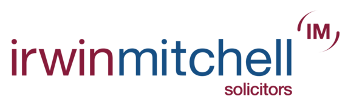
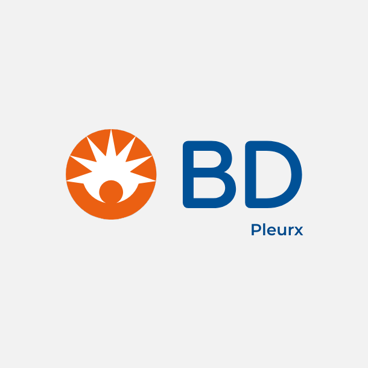
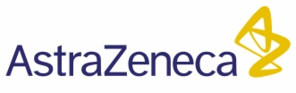
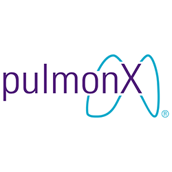
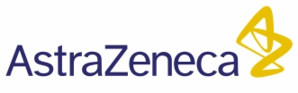
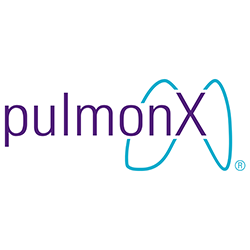
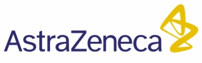
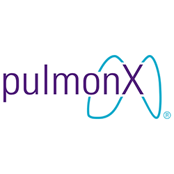

Pleural Seminar Wales 2025 — Programme
Below is the programme for Pleural Seminar Wales 2025. Times may vary slightly on the day.
Morning Session
08:40 – 08:55
Registration and coffee
08:55 – 09:00
Welcome and Introduction
Dr Alina Ionescu — Consultant Respiratory Physician, ABUHB
09:00 – 09:45
Straight to biopsy?
Prof Najib Rahman — Oxford Centre for Respiratory Medicine
09:45 – 10:15
Update in mesothelioma research – HIT-MESO trial
Dr Paul Shaw — Velindre Cancer Centre
10:15 – 10:45
Local anaesthetic thoracoscopy practice in the UK 2024: A snapshot survey
Richard Westley — Glenfield Hospital, Leicester
10:45 – 11:15
Coffee Break
11:15 – 12:00
Evidence for clinical applications of Artificial Intelligence
Prof Alan Fraser — Cardiff University
12:00 – 12:20
Current chest drain practice at the Grange University Hospital – a clinical audit
Natnael Afesha — Trainee, ABUHB
12:20 – 13:00
Legal aspects in asbestos-related pleural disease
Hayley Hill & Satinder Bains — Partners, Irwin Mitchell LLP
13:00 – 13:50
Lunch Break
Afternoon Session
13:50 – 14:00
Pleural standards – collaboration group for Wales
Dr Alina Ionescu
14:00 – 14:15
Thoracic Ultrasound training – an interactive teaching tool for trainees and students
Rebecca Pearce & Alina Ionescu — ABUHB
14:15 – 14:30
Retrospective analysis of 10 years of Ambulatory Pleural Procedure Service (APPS) at SBUHB
Dr Narendra Chinnappa — Swansea Bay UHB
14:30 – 14:45
Empyema – how do we manage it?
Nora Ramley — Trainee, ABUHB
14:45 – 16:30
Case Competition — Coffee available during the session
Case 1: Serious incident: A case-based discussion - Sara Davies (ANP, Swansea Bay UHB)
Case 2: What is in the differential? - Sarah Case (SpR, Wales)
Case 3: What does this ‘milky appearance’ of pleural fluid hide? - Sion Freeman (IMT) & Eilish Yarman (SpR, Wales)
Case 4: An unexpected pleural finding - Dana Bendajki (Trainee, ABUHB)
Case 5: On the Rocks — alcohol and its impact on pleural fluid - Alexander Kyriakou-Haniche (Cardiff & Vale UHB)
Case 6: Chest drain needed? Or maybe...not? - Gokul Muthaluraj (ABUHB)
Case 2: What is in the differential? - Sarah Case (SpR, Wales)
Case 3: What does this ‘milky appearance’ of pleural fluid hide? - Sion Freeman (IMT) & Eilish Yarman (SpR, Wales)
Case 4: An unexpected pleural finding - Dana Bendajki (Trainee, ABUHB)
Case 5: On the Rocks — alcohol and its impact on pleural fluid - Alexander Kyriakou-Haniche (Cardiff & Vale UHB)
Case 6: Chest drain needed? Or maybe...not? - Gokul Muthaluraj (ABUHB)
16:30 – 16:35
Decision on best presentation and prize winner
16:35 – 16:45
Prize presentation, feedback and conclusions
16:45
End of meeting
CPD Accreditation:
16th Pleural Seminar for Wales has been approved by the Federation of the Royal Colleges of Physicians of the United Kingdom for 6 Category 1 (external) CPD credits. Code 153330.
16th Pleural Seminar for Wales has been approved by the Federation of the Royal Colleges of Physicians of the United Kingdom for 6 Category 1 (external) CPD credits. Code 153330.
Thanks to our sponsors for supporting the seminar


 




